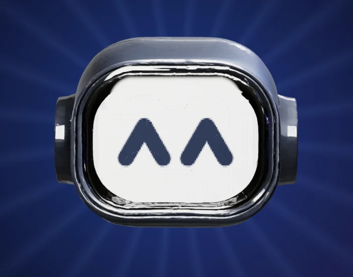
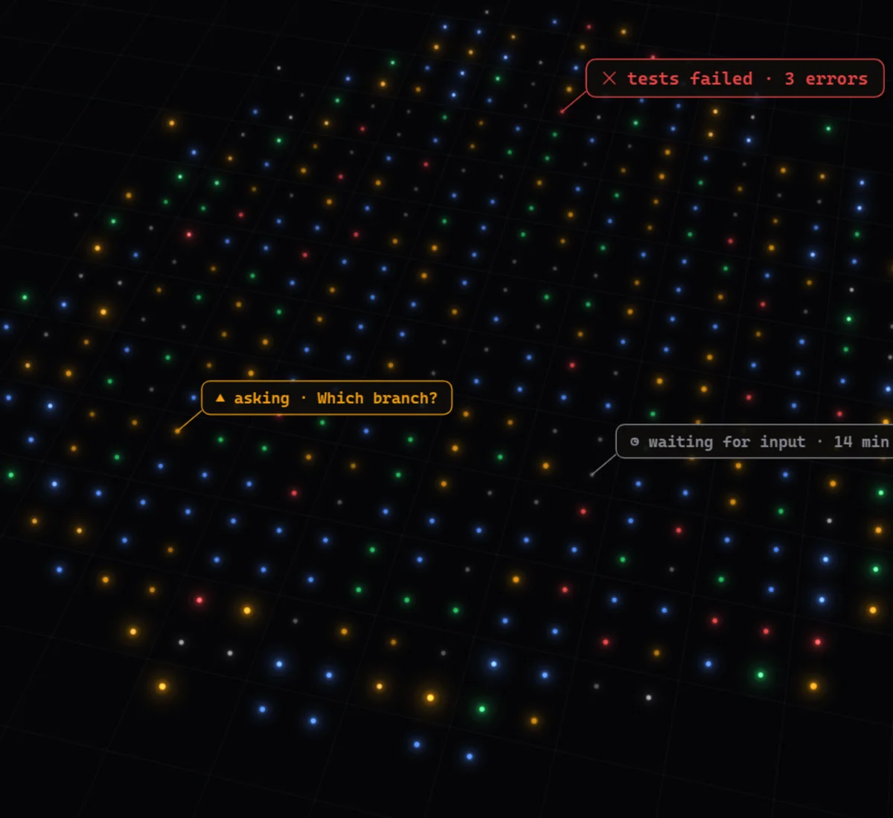

releaselocal
✻ Welcome to Claude Code · Opus 5.5 · ~/devpilot
>
Devpilot is a desktop home for every Claude Code, Codex and ssh session you run. See who is working, who is waiting for you, and what each one touched — in one window.
Which branch should the mesh fix go to?

Hosts the agents you already use
Running agents in parallel is easy. Keeping track of them is not. Tabs hide the session that is asking for a branch name, the build that failed, the pull request that is ready to merge. Devpilot turns the swarm into a board you can read at a glance.

Terminals live in a grouped, filterable sidebar. Hooks report what each session is doing — no AI guessing, no title scraping — so the dot next to every name is always the truth.
Group terminals by project. Link a category to an initiative and its badge follows you in the sidebar and the top bar.
Every terminal reopens in the same folder, with the same command and environment. Profiles prefill shells, accounts and hosts.
Renaming a terminal renames the Claude session inside it — queued until the prompt is free, never mid-turn.
An agent that needs you posts a real question — yes/no, a choice, a line of text. It lands in the Pending tab; your answer goes straight back into the session that asked.
Long steps — deploys, test gates, rollouts — report themselves with devpilot progress. The terminal row shows the step instead of the summary, the Pending tab keeps the history, and failures stay red until you clear them.
devpilot progress --id release "Publish 0.3.20" --step 3/5 --detail "Signing"
devpilot progress --id release --doneThe orb floats above every window. It counts who is asking, pulses on each event, and when an agent finishes it speaks one line — while the terminal that spoke glows in the sidebar.
devpilot speak plays a short line with a caption; the active terminal never switches under you.Devpilot reads what each session does and collects the pull requests it opened, the issues it touched and the links it mentioned. GitHub fills in the rest — and a right-click acts on it.
acme/web#5932Openacme/web#5910Opengithub.com/acme/webReattach the tmux session and replay the last status instead of showing the row as exited.
main ← 5932-restore-sessions
Created by this session, worked on, or just referenced — with GitHub state, checks, labels and reviewer verdicts.
Title, body, branches, labels and reviewers without opening a browser. Ctrl+Shift+F searches all of it.
Right-click to toggle labels, request a review from your bots, or send /review-locally and /babysit-pr to the terminal.
Every terminal has its own browser tabs. An agent runs devpilot preview and its HTML mockup opens next to it — read in place, from this PC or a remote host — with the sign-off question docked under the page. Pick an option, add a note, and the agent gets back to work.
Tabs belong to the terminal they were opened from: pull requests, docs, dashboards, rendered Markdown — beside the work, not in another window.
Mockups load from where the agent wrote them, assets included, local or over ssh. Reload picks up the agent's edits.
Choose an option and say why. The answer — and the note — arrive in the agent's session as a single message.
ssh claude-runner-2Save the prompts you type every day and send one to the active terminal from its toolbar. Bind F-keys to launch specs: press one to jump to that terminal, or create it — category, profile, folder and command — if it is not open yet.
Remote terminals run inside tmux on your build boxes and survive restarts and dropped networks. A per-host tunnel brings their status, questions and voice home, and the agent mesh lets one session message another — on any host, with or without the app open.
Open a remote profile and you land in a named tmux session. Close Devpilot, lose Wi-Fi — it is still there when you come back.
devpilot notify --to android-qa drops a message in that session's inbox, on whichever machine it runs.
Drag a file or paste a screenshot onto a remote terminal: it is uploaded to that host and its path typed at the prompt.
The status bar shows the active session's model, effort and context, your machine's health and the daily and weekly usage of its account — with a pace arrow that projects where you will land at the reset.
out ~6:13pm.Every Claude config dir you use is its own account, tracked live from the status line and Anthropic's usage endpoint.
A new Claude terminal suggests the account with the most weekly quota left. One click to accept, still yours to change.
Reset times, rate per hour and the projected percentage at reset for every account, side by side.
The small things that make a terminal you live in all day.
Tap Shift twice — even inside a terminal — to switch, create, move, answer or open anything.
Ctrl+Tab cycles terminals, Alt+number jumps to a category, F2 renames, Ctrl+P opens quick-access profiles.
Nine terminal themes, eight accents or any hex. Spinner and attention colours are yours too.
Files and screenshots become paths at the prompt, locally or on a remote host, exactly like a native drop.
Command, environment and folder presets: several Claude or Codex accounts, ssh hosts, plain shells.
GET /terminalsPOST /speakPOST /pointA loopback API and the devpilot CLI let agents and scripts drive terminals, tabs and toasts.
Devpilot runs on Windows, built with Tauri, Rust and xterm.js.